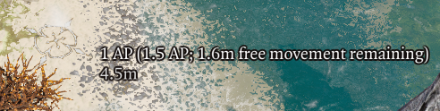
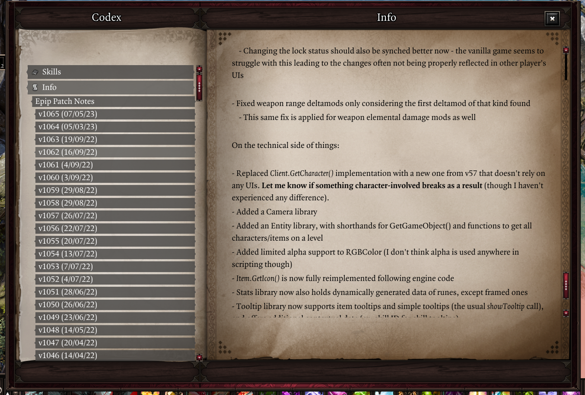
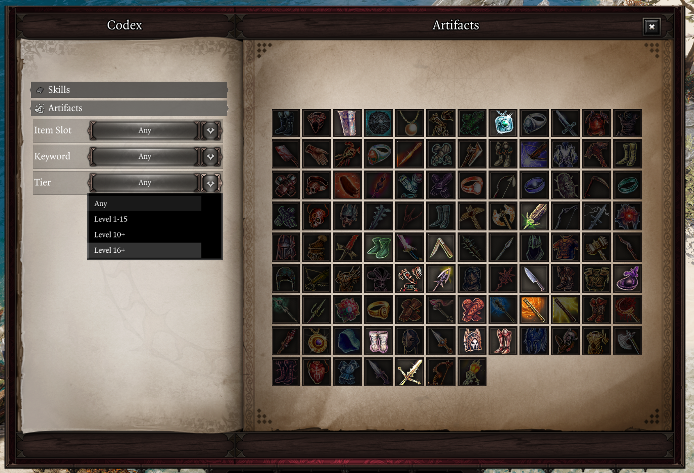
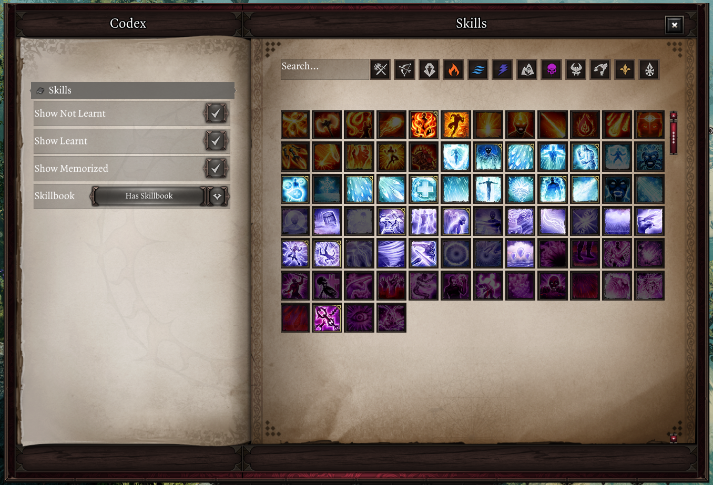
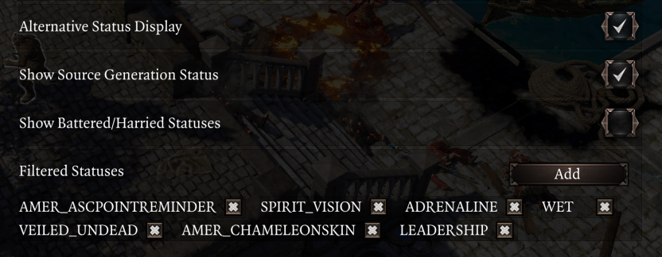
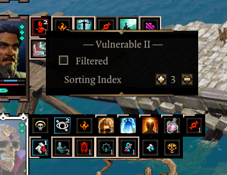
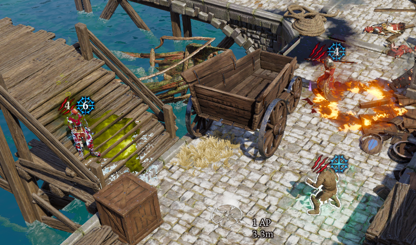
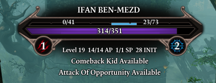
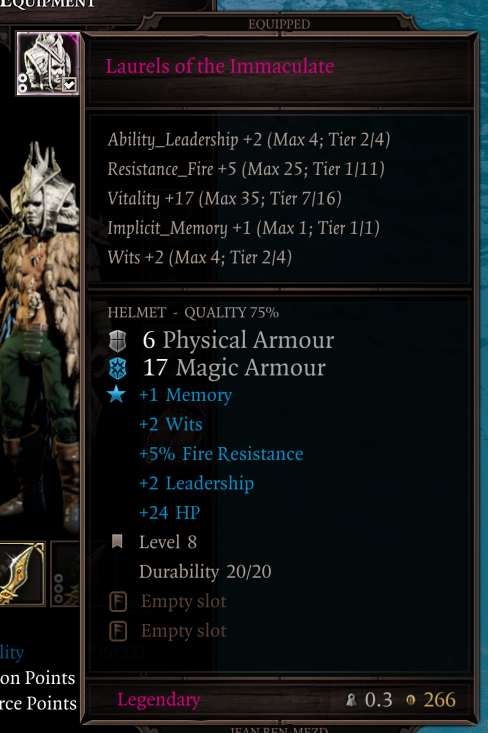
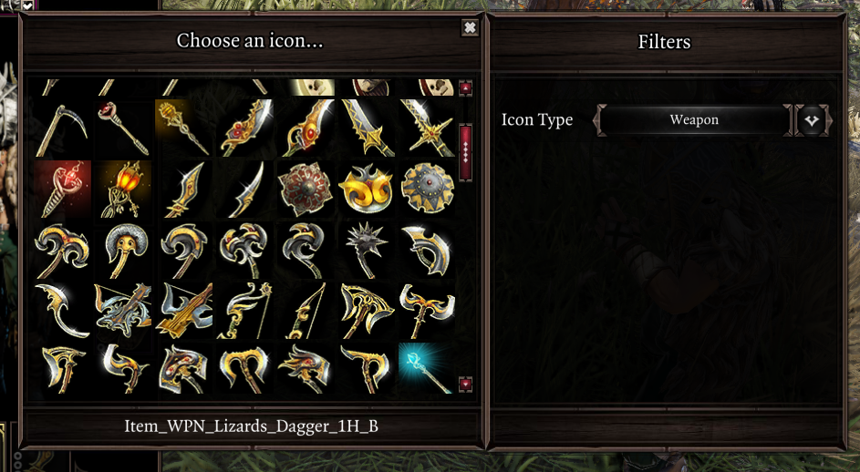

Beta Versions
Extender devel version required
Requires extender v60. Intended version: 4732ddc239fac2feeb1a5388a81e81a1920f7b7553dff0d3ac67b7c03916a9ff
To get it, use the following ScriptExtenderUpdaterConfig.json in the same folder where you installed the Extender (DefEd/bin):
{
"UpdateChannel": "Devel",
"TargetResourceDigest": "4732ddc239fac2feeb1a5388a81e81a1920f7b7553dff0d3ac67b7c03916a9ff",
"TargetVersion": "60.0.0.0"
}
v1066 (02/09/23 upload)¶
Inventory Multi-Select¶
An option to enable multi-select controls for the party inventory UI has been added, enabled from the "Inventory" settings tab.
Use Ctrl+Left Mouse Button to select/deselect items. If at least one item is selected, Shift+Left Mouse Button will select a range of items between the mouse and the first selected item.
Right-click selected items to access a context menu with operations, or drag and drop them to inventory slots, player inventory tabs, or container items to move them.
Other additions and changes¶
- Added a setting to play a notification when another player joins dialogue, to make it harder to miss. You may enable it in the "Notifications" tab.
- The hotbar action for using pyramids now has the following priority for picking the pyramid to use:
- Pyramid within the inventory of the character that pressed the button
- Pyramids within other characters controlled by the same user
- Other pyramids in party inventory
Fixes¶
- Fixed hotbar bedroll and pyramids actions not working if EE was not enabled
- Fixed camera settings not being saved after clicking "Reset to defaults"
- Fixed status tooltips appearing far away from the cursor in the Alternative Status Display
- Fixed some labels being cut off in the settings menu
Technical stuff
- TextLib no longer removes outdated translations from localization templates
- Added
PlayerInfo.GetPlayerElements(), and hooks forupdateInfos - Fixed a regression causing the prompt for opening the Fishing log to not work
- QuickInventory: fixed built-in Generic events being hidden
- Added align options to
Tooltip.ShowStatusTooltip(), moved it to separate script (other tooltip types will follow) Library:Error()now blames user code in the stack; the newLibrary:InternalError()blames the function itself- Fixed comments for aliases in generated IDE annotations
- OsirisIDEAnnotationGenerator now supports all symbol types from the header, uses lowercase for parameter names, avoids parameter name duplication and has an option to generate annotations intended for the
Osirislibrary - Fixed
Itemnot actually being a library - Clarified the usage of
Item.GetOwner()
Generic¶
- Instances now come with an empty
Hookstable - Fixed
Text:SetType()not applying until the text was changed (didn't affect Text prefab) - Spinner: cleaned up script, implemented Elementable, changed default colors to white
v1066 (26/08/23 upload)¶
New Features & Changes¶
- Added a setting to allow dragging unlearnt skills onto the hotbar, ex. from the codex. This is useful for creating placeholders. You can find it in the "Hotbar" tab.
- Made various strings from older features translatable, mostly tooltip-related ones
- Holding shift to see precise AP costs for movement should now work in other languages
- The setting to disable loremaster shared notifications should now work in other languages
- Added a setting to disable the "Masterworked" tooltip
Due to some reorganization, you will have to rebind the B/H Overheads hotkey.
Quick Find¶
- The position of the UI no longer resets to the screen center every time it's opened
- Added a wares filter
- Added a scrollbar to the settings panel, for when there are too many of them
- Improved performance when changing settings
- Stat filter now has a tooltip
- Fixed searching for "two-handed" and "single-handed" stat boosts not working
Fixes¶
- Fixed the "Gear modifiers are added after choosing your reward" and surface damage scaling tooltips appearing when not using EE
- Fixed performance degradation in the Codex Info section
- Fixed physical armor reduction using the wrong color when holding shift to see damage multipliers in skill tooltips
Technical stuff
- Removed some old UI files
- Added HTML-related methods to
Text.HTML Text.Format()now mentions relative font sizes being supported, and the `FormatData`` class now has all fields marked as optional for clarity- Fixed align option in
Text.Format() - Added a new IDE annotations generator for Extender classes and libraries; see
Features.IDEAnnotationsand!ideannotations- Fixes various issues with the built-in generator, ex. aliases for enums
- Minor annotation fixes and cleansing of unholy trailing space
- Hotbar: added new methods and
SlotHoveredevent - InputLib: action names and descriptions now support TSKs
- DebugMenu configuration is now saved upon exiting
Feature:Disable()has been reworked intoFeature:SetEnabled()and now properly supports re-enablingEvent:Unsubscribe()now removes all nodes with the passed ID- TooltipLib now has some methods copied over from Game.Tooltip to workaround certain mods yeeting them
Generic¶
- AnchoredText: added
inactivecolorandactivecolorattributes to<a>, for auto-coloring anchors based on state - Texture: implemented
SetAlpha() - GenericUITextures now has a UI that previews registered textures and styles, opened using
!genericstylesor a new developer keybind (defaults to Left Ctrl+L) - Added support for pooling Text elements, improving performance in cases where they are destroyed and recreated (ex. Codex Info section)
- Fixed
SetChildIndex()for lists and out-of-range indexes (ex. passing 999 now properly sets the element as last) - Added
SortByChildIndex()to lists (except Grid) - FormElement now implements Elementable
v1066 (12/08/23 upload)¶
New Features & Changes¶
- When holding shift during combat, your remaining free movement distance is displayed, and decimal AP costs are now also displayed with the Pawn talent
- Added a new setting that speeds up picking items through clicking their world tooltips; you may find it underneath the Animation Cancelling setting
- In the mods menu, "Targets story mode" tooltip is now "Targets campaign mode" to prevent confusion

Quick Inventory¶
- Added a "Miscellaneous" filter, which currently shows books and keys
- You may filter out read books and used keys
Codex¶
The Codex has received a new "Info" section, where textual information will be placed. Currently, it contains Epip changelogs; the previous UI for these has been removed. The "Epip has been updated" message box will now take you to this UI instead.

World Tooltips¶
- Added a filter for lights (torches, braziers, etc.)
- Added a filter for beds, within the same setting that filters chairs and doors
Fixes¶
- Fixed non-English languages still having gameplay mod string overrides
- Fixed an issue that was causing custom tooltips that were positioned near the mouse to "stick" to their initial place
Technical stuff¶
- Fixed
Library:Error()erroring (lol) - Codex's sidebar can now be extended by Sections
- Minor cleanups and annotation fixes
- ExtraData in Stats library is now parsed from mod files
- A few minor new calls were added to some libraries
- Choice settings no longer throw when an invalid value is set; this helps with migrating choice IDs of existing settings
- QuickInventory UI now has a RenderSettings event, solving the open-closed violation of the settings panel
Generic¶
- Added the AnchoredText prefab, which enables events when hovering or click text with
<a>HTML tags SettingWidgetsfeature now supports setting descriptions as tooltips- Passing
niltoSetTooltip()is now supported, removing the tooltip properly - Added a MouseMove event; this is spammy, so it is opt-in
- Added
Text:IsMouseWithinRange()andText:IsMouseWithinKeyword() - Text prefab now inherits events from the element, and supports the
setSizeparameter - Size overrides are now considered for GetRawWidth/GetRawHeight
- The size overrides are getting a bit weird to handle, so this might change in the future
- Button prefab's Pressed event is now thrown after state changes
- Cleaned up the Text element, possibly improving preformance a tiny bit
v1066 (5/08/23 upload)¶
Changes & additions¶
- Added a setting to show surface tooltips above the hotbar UI, enabled by default
- When creating Hotbar Groups, the labels in the UI now use a black text color
Fixes¶
- Vanity: fixed transmogged armors showing up after the character's corpse was destroyed, which also lead to materials persisting on them
- Codex: fixed skills with a name that's not a string key being filtered out (ex. skills that had their name directly set in Lua)
- Fixed some artifacts having the wrong keywords declared in Epip (which affected Codex filtering), and added keywords to many artifacts which previously didn't have them
- Marked more scripts as EE-only
- You should no longer see giftbag warnings if EE is not enabled
Technical stuff¶
- Minor annotation fixes for CombatLog
- Fixed some TooltipAdjustments TSKs being registered on the wrong library
- Added more DB methods to
Osiris - Updated the Osiris calls used by the StatsTab feature, hopefully removing all deprecation warnings
Generic¶
- Added more textures and button styles
- Texture: width and height overrides can be specified separately (ex. can pass
-1, 100as params toSetTexture()) - Fixed field visibility of
Stylable._Style(now protected), addedGetStyles() - Added the
SlicedTextureprefab, which will replaceTiledBackgroundandDivider. Only a few textures are built-in for it right now
v1066 (29/07/23 upload)¶
Punisher¶
- Added voice acting, available for a limited time only as it hurts my throat to do such an edgy voice all the time
Custom Hotkeys¶
The custom hotkeys system has been reworked. They are now accessed via a tab within the Epip settings menu, rather than the game's controls menu. This will offer them more flexibility in the future.
You will have to reconfigure your previous bindings.
Quick Find¶
- Added a rarity filter
- Added a setting to close the UI when you click something in the world
- The close button now plays a sound when clicked
- Considerably improved performance once again
Other changes and additions¶
- The settings menu now has some margin on the leftmost labels of settings
- Slight performance improvements to the Codex
- Small (~5%) performance improvement to all Generic UIs (most custom Epip UIs)
Fixes¶
- Fixed Portable Respec Mirror hotbar action not working
- Fixed the Alternative Statuses Display showing up in the respec screen
- Fixed tooltips not being hidden if you exit the settings menu with escape key
- Fixed sliders in the settings menu not being vertically centered
- Fixed being able to scroll too far in Quick Find and the Codex if you go from having a lot of slots to only having a few
- Fixed massive FPS drops in the Epip settings menu
Technical stuff¶
- Added hooks to the Overhead UI
- Fixed cases of trying to fetch vanilla TSKs during module load
- Added vararg to all logging methods in Library/Feature
- Added
Feature:__Initialize()as well as a hook for before/after it; this will be the intended moment to initialize feature fields from now on (for easier patching) - Added
RegisterAction()to HotbarActions to make it easier to use - Extracted TSKs for HotbarActions
- Codex: added an interface for grid-like sections, reducing code duplication
- Moved some Generic classes to separate files, cleaned up annotations
- Fix a missing nil check in PersonalScripts
- Deprecated the
REQUIRED_MODSfield in Feature - Added a Hook alias for Event; the previous Hook class is now LegacyHook
- Consolidated previous ViewportChanged events into a single one within Client
Generic:
- Changed layout to
fitVertical - Added support for capturing input events ("Iggy Events")
- A more sophisticated system for creating navigation will be added in the future
- Added FormTextHolder prefab (for input settings menu)
- Added more width/height-related calls
SetPositionRelativeToParent()now considers size overrides- Fixed destroying children within containers for all remaining container types
- Previously only Grid had this consideration, where in practice it was the only place it mattered, as it set the visibility of elements it positioned - which it no longer does either
- Improved
Text:GetTextSize()accuracy yet again - all cases of short text being cropped horizontally should now be solved - Fixed annotations for exposed Element methods
- Marked listeners as private methods
- Removed obsolete events
- Containers now use
GetWidth()/GetHeight()to fetch element sizes, meaning they not only respect size overrides (which they already did) but also overrides of the function itself- Containers now override this to return the width/height of the visible content itself, rather than using the calculated flash values. This fixes the case of scrollbars being oversized
v1066 (16/07/23 upload)¶
This patch adds an Artifacts tab to the Codex.

Artifacts that you own (either equipped or in the party inventory, as item or rune) are highlighted. You may filter artifacts by their slot, associated keywords, as well as tier, if you're using Derpy's Artifact Tiers.
Other changes and additions¶
- Added Simplified Chinese localization by Ainsky
- There are certain issues with this translation, however we have not been able to contact the author yet. Please join the
#epipelinechannel on the EE discord if you authored this translation.
- There are certain issues with this translation, however we have not been able to contact the author yet. Please join the
- Enabled mouse controls when using controller
- This enables you to use UIs that support mouse, such as custom Epip UIs, as well as some reused Larian KB+M UIs such as the player portraits
- This prevents the mouse from being hidden while idle when using controller (might become a setting later)
- Custom tooltips from Epip UIs now work while using controller
- BH Overheads now show for characters near the camera point, rather than near your selected character
- Significantly reduced stutter from BH Overheads
- Significantly reduced stutter for Epip UIs that use inventory-like slots
- The time to open Quick Find for the first time should be reduced by 30-35%
- The Skills Codex should see similar improvement
- Source Infuse and Meditate keybinds are now only shown if EE is enabled
Fixes¶
- Fixed the tooltips for various world tooltip options misnaming the "Enable tooltips for all items" option
- Hotbar: fixed chain/unchain actions not working (beta issue)
- Fixed source infuse / meditate keybinds not working (beta issue)
- Examine Menu: fixed critical chance appearing in the wrong place for characters with many resistances
- Quick Examine: fixed resistances text getting cropped out if a character had too many of them
- Fixed the click sound for close buttons not playing in some custom UIs
- Fixed BH Overheads appearing over invisible enemies
- Fixed some sliders in the settings menu having their values cropped out until interacted with
- Fixed positioning of the "Alternative Status Display" when using controller
Technical stuff¶
- ArtifactLib: added
IsOwnedByParty(),HasKeyword(), and missing VolatileArmor keyword tags to artifacts - Added
Profilinglibrary as well as Feature integration. No GUI exists for this yet, results can only be viewed through the console command - Added
EnabledFunctorproperty to event options, letting listeners only fire conditionally- Feature has a method that returns such a functor which checks for
:IsEnabled()
- Feature has a method that returns such a functor which checks for
- Added
ObjectPooldata structure - Fixed
Text.Round()for negative values - Added
Meditatelibrary (currently barebones, will aid in controller support later) - Added
SourceInfusion.RequestInfuse() - Various annotation fixes, and purging of trailing whitespace
- Improved
Character.GetStatusesFromItems(), now works with many more status sources (hopefully all) - Fixed
Combat.GetCombatID()on server - Removed the extender IDE files from the project to fix issues with doc generation. In the future, Epip will get its own annotation generator to fix the many issues with the current one
- Improvements to the localization sheet (will be deployed the next time the sheet is updated):
- Outdated translations will have their cell marked in red background color
- Rows will be sorted by script and original text (alphabetically)
Generic¶
- Added custom tooltip support to elements, and fixed not being to replace an existing tooltip
- Added
Element:GetParent()andElement:GetChildren() - Added an experimental
VerticalListprefab that reimplements the basic VerticalList element functionality.- Unfortunately the performance of this is at best tied with the element, but it can serve as an example of how to implement custom containers, should you need for example unusual element positioning.
- Manual
Destroy()now makes table references unusable - Fixed
Destroy()not working properly for elements withinVerticalList. The other containers will be fixed later. - Fixed
Text:GetTextSize(); the flashtextHeightproperty was highly inaccurate; it seemingly considered the height as if the text had one more line than it actually did - Added
Text:GetLineHeight() - Added more textures and icons - make sure to redownload the assets folder if you're using the unpacked mod
- The
Slotelement now has certain features such as cooldown animations disabled until they are needed. This signficantly improves performance when creating many slotsHotbarSlotprefab has been adjusted to support this
v1066 (1/07/23 upload)¶
This update adds the Codex UI, which will be an in-game knowledgebase for various topics. Currently it only features a Skills page that displays all player skills in the game, and allows for filtering and searching them. The default keybind for opening the Codex is Left Ctrl+G.

This page also serves as an alternative to the skillbook; you can drag skills out of it to memorize them and assign them to your hotbar.
In the future, you'll also be able to unmemorize and learn skills directly from it, if you have the skillbook.
Quick Inventory¶
- Added wand, bow and crossbow filters, which were missing by oversight
- Added sorting for consumables; order is:
- Scrolls
- Grenades
- Arrows
- Potions
- Food
- Drinks
- Fixed searching for resistances not working properly
Other Changes¶
- You can now change the layer of a hotbar group through their context menu
- Added a close button to the hotbar group creation/resize UIs
- Runes no longer show the confusing "Set :" prefix
- This was previously only done for equipment
- A setting to disable this tweak has also been added
Fixes¶
- Fixed TSKs from the gameplay mod still being in Epip; you will need to redownload the gameplay mod if you use it
- Slots within Epip UIs now only play a dragging sound if the slot is not empty
- Fixed some tooltip adjustments not working on tooltips created within Epip UIs
- Fixed Ambidextrous checks (again) which might've lead to incorrect hotbar behaviour with potions and scrolls
- Fixed the Debug Cheats menu showing the wrong talents for characters that weren't the active client character
- Fixed performance issues from the stats tab when picking up items
Technical Stuff¶
- Added a way to load lua scripts from a file defined in
Osiris Data/Epip/PersonalScripts.json; this can be used to load test/debug scripts without needing to include them within the mod. See thePersonalScriptsfeature.- Removed various console commands as they are of no use other than personal
- Added
Texturelibrary, and support for its data structures for Generic - Various annotation fixes and clean ups
- Added more methods to CombatLib and fixed
GetTurnOrder() - Moved Epip's Hotbar actions to a new feature
- Added
GetClassDefinition()to OOP classes - Choice settings's
SetValue()now has validation - Fixed registering TSKs with a StringKey
Library:RegisterTranslatedString()now returns the TSK- Fixed
OOP.IsClass()throwing if the object was not a class - Added the
Elementableinterface, which lets prefabs behave as if they were elements ("inheriting" Element's methods) Stats.Get()now allows type-capture- Added
UI:ToggleVisibility() - Added some basic InputLib integration to Feature
- Added the
SettingsWidgetsfeature, for rendering settings into Generic UIs as form elements - Added the
SkillbookTemplatesfeature, which lets you query item templates that have a SkillBook use action - Fixed an error when hovering over a Status prefab whose status had expired
Generic¶
- Added the
Stylableinterface, for defining styles for customizing prefab appearances - Added the
Buttonprefab, which will replace the Button and StateButton elements. Its major advantage is support for styling, as well as the extendability and maintainability that comes from it being implemented in lua rather than flash. - Various fixes to the Texture element
- Added
GetRawSize()to some elements - Fixed return values when calling exposed flash functions from lua
- Reworked CloseButton prefab to use the Button prefab
- Added focus-related events to Text element
- Added lots of UI textures and icons for use with Generic; see the
GenericUITexturesfeature - Added the
SearchBarprefab
v1066 (18/06/23 upload)¶
This version adds an option to replace the status bar by your character's portraits with a new custom UI - see "Alternative status display" in Player Portrait settings.

This by default behaves mostly the same as the regular status bar, with the major exception being no animations for statuses being removed - they might be added if there is demand.
The major advantage of this new UI is status sorting, which was thought to be too difficulty to implement in Larian's UI. Right-click a status to set its sorting priority.

Statuses with a high priority show up in the leftmost position, while statuses with a low priority show up in the rightmost position. Statuses that are tied in priority show in order of application. You may use this to position important or informational statuses (ex. Source Generation duration or tiered statuses) in a consistent position.
You may also filter out statuses in this context menu to hide them. Holding shift will temporarily disable this filter, letting you quickly check your hidden statuses and unhide them if necessary. You may also manage this filter within the settings menu.
Other changes and additions¶
Added a new hotkey that will show BH over the heads of nearby characters while held ("Show B/H" binding; unbound by default): 
Added an option to display common flags in the enemy health bar ("Display common flags" setting). It will display the following information (if applicable) while holding shift:
- Whether Comeback Kid is available
- Whether Attack of Opportunity is available
- Whether the character is flagged as incapable of joining combat
- The character's AI archetype (ranger, rogue, etc.)
- These flags are not shown if the character doesn't have them

Holding shift while looking at equipment tooltips will now display information about their EE gear modifiers, such as their tier. This display will be improved in the future to be more user-friendly.

Quick Find has received various improvements:
- Added a filter for Culled items
- Added a filter to hide equipped items
- The UI is now draggable (from the top area)
- The UI is now closed automatically when you drag an item into the Greatforge socket (which you can now do thanks to an extender fix)
You can now manually set an icon for an item with Vanity Transmog using the new "Set Icon" button. The "Keep Icon" toggle remains and works alongside it. This uses a new "Icon Picker" UI.

Other small changes¶
- Server-side animation cancelling now has special logic to handle some previously problematic skills
- Projectile, Jump, MultiStrike, ProjectileStrike and Target skills now have special logic to handle cases like multi-projectile/hit skills
- "+X% Weapon Elemental Damage" tooltip now works for any deltamod that adds damage, not just ones from EE
- Hotbar groups can now be resized through their context menu - you can thank Cathe for that
- Changed hotbar slot requirement evaluation to use a new extender call, which should also make it compatible with mods using custom requirements
- Added a Gloves filter to Quick Find, which was previously missing (thanks Cathe)
- Reordered slot filters in Quick Find; armor goes first, then weapons/shield, then jewelry (thanks Cathe)
- Fixed a vanilla bug where undead characters would not see any armor restoration numbers over their head
- Added the
!rainbowoverlaysconsole command - Cleaned up some scripting for the default crafting filter; as a side-effect you will have to reconfigure the setting
Fixes:
- Fixed a regression that caused EE to add permanent stats when using their dyes
- You can use the
!fixdyestatsconsole command to remove these extra stats from your current active character; you'll need to run it once for each dye you applied - Reminder that Epip has a far more customizable dyes feature in the Vanity UI
- You can use the
- Fixed EE dyes being usable from Vanity even if the party didn't have them
- Fixed hotbar group slots having wrong element layering and all blinking while using any skill
- Fixed some hotbar inaccuracies when using Ambidextrous
- Fixed node stats in the stats tab not disappearing after being removed. This fix is retroactive.
- Fixed Inconspicuous being hidden while not using Derpy's Tweaks
- Fixed "Show loot drops in healthbar" feature possibly not working correctly with Derpy's changes
- Fixed a hotbar error if you unbound the vanilla hotkeys for vanilla actions (inventory, journal, map, etc.)
- Fixed an error when dealing damage through moving items
On the technical side:
- Added OverlayColorsBruteForcer feature, which as the name suggests helps with figuring out the usages of the 50 overlay colors in GlobalSwitches
- ColorLib now contains an enum of most overlay colors used by the game
- Fixed
Character.GetSkillState()on server - Added
Damagelibrary, currently only containing TSKs for damage types - will be used for hit/heal-related business later on - Craft UI table now has the TSKs for item filters
- Ambidextrous check in
Item.CanUse()should be more accurate now - Added
Tickevent to GameStateLib - Added
BatteredHarried.IsDisplayStatus(),Stats.GetStatusName(),Color.Lerp(),DeltaMods.GetItemDeltaMods()and an item-only overload toItem.IsEquipped() - Added SPIRIT_VISION icon to StatsLib
- SourceInfusionLib now holds Source Generation status IDs
- Fixed
Stats.GetStatusIcon()for CONSUME statuses - It's possible to now register TSKs post-init in features/libraries via
:RegisterTranslatedString() - Various annotation fixes, mostly to Stat entries
- Simplified
Client.IsInDialogue()implementation - UserVarsLib now supports default values for user and mod variables
Item.GetPartyTemplateCount()now strips GUID prefixes- Generic:
- Added CloseButton and DraggingArea prefabs
IggyIcon:SetIcon()call is NOOP'd if there is no change in the icon setup (texture, width and height), which possibly increases performance in icon-heavy UIs- Fixed
Instance:Destroy() - Status prefab now looks a lot closer to the statuses in Larian UIs
IggyIcon:SetAlpha()now supportsaffectChildrenparameter